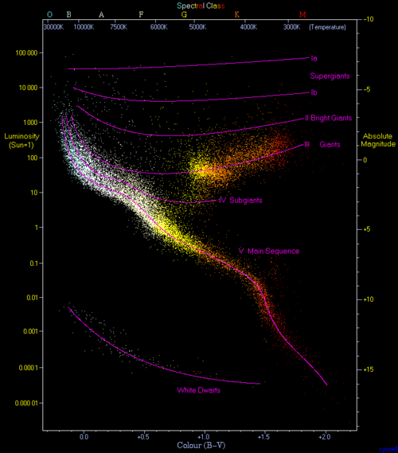

A Nebula is vast interstellar cloud of dust, hydrogen, helium and other ionized gases
located in the space between stars. They are some of the most dynamic structures in the universe,
serving as the birthplaces of stars and planets.
Stellar Nurseries and Graveyards: Nebulae act as both birthplaces and the graveyard for stars.
They are formed either from the remnants of dying stars(supernova explosions) or in the relgions where
gas clumps together to form new stars.
The Formation Process: In these regions, gas, dust and other material "clump" together to form
denser areas. These clumps attract matter, eventually becoming dense and hot enough to ignite nuclear
fusion and form stars.
Planetary Systems: The remain material around newly formes stars can coalesce to
form planets, moons, asteroids and comets, making nebulae crucial for the formatiom of planetry systems.
Historical Context
Orignally, the term "Nebula" was used to describe any diffuse astronomical object
including galaxies beyond the Milky Way. However, with the advent of more powerful telescopes, astronomers were able to
distinguish between nebulae and galaxies, leading to a more specific definition of nebulae as
interstellar clouds within the Milky Way.
Andromeda Galaxy, for instance, was once referred as the Andromeda Nebula before the true
nature of galaxies was confirmed in the early 20th century like Vesto Slipher's observations of the
redshift of light from Andromeda, which provided evidence that it was a seperate galaxy outside
the Milky Way.
Edwin Hubble discovered that most nebulae are associated with star and illuminated by starlight.
He also helped categorize nebulae based on the type of light spectra they produced.
Formation of a Nebula captured by James Webb Space Telescope
Nebulae are formed when the thin, scattered matter of the interstellar medium is
pushed together by a massive gravitational distrubance. Thiscould be shockwave from a
nearby supernova explosion or powerful stellar winds shed by a dying star. Over millions of years,
the densest regions within these clouds become highly compressed, giving birth to new stars and illuminating
the surrounding gas to create brilliant, intricately structured cosmic clouds.
Examples of Nebulae
1. The Orion Nebula (M42)
The glowing stellar nursery of the Orion Nebula
Believed to be the cosmic fire of creation by the Maya of Mesoamerica, M42 blazes brightly in the constellation Orion. This stellar nursey has been known to many different cultures throughout human history. Key features includes:
Proximity: Located only 1,500 light-years away, making it the closet larger star-forming region to Earth.
Visiblity: Because of its brightness (apparent magnitude of 4.0) and prominent location just below Orion's Belt,
it can be spotted with the naked eye
Best Viewing: It offers an excellent peek at stellar birth through a telescope and is best observed during January
Observation Data(J2000 epoch)
Subtype
Reflection/Emmission
Right Ascension
05h 35m 16.8s
Declination
−05° 23′ 15″
Distance
1,267.0 ± 5.4 light-years
Apparent Magnitude
4.0
Apparent Dimensions
65×60 arcmins
Constellation
Orion
Radius
3 Light-Years
Absolute Magnitude
-4.1
Notable Features
Ttapezium Cluster
Designation
NGC 1976, M42, LBN 974, Sharpless 281
Discovery and Structure
First Documentation: Discovered as a nebulous object in 1610 by French astronomer Nicolas-Claude Fabri de Peiresc using a refracting telescope.
Histrocial Timeline: Christian Huygens made the first detailed drawings in 1656, and Charles Messier icluded it as M42 in his catalog in 1769.
The Trapezium Cluster: Surrounded by the much larger Orion Molecular Cloud Complex. It is spectulated that the nebula may contain an Intermediate-Mass Black Hole with 200 solar masses.
2. Cat's Eye Nebula (NGC 6543)
The complex, glowing gas shells of the Cat's Eye Nebula
Discovery and Significance
Discovery: Found by William Herschel on February 15, 1786.
Location and Age: Located in the Draco constellation, this is a relatively young planetary nebula (approximately 1,000 years old).
Scientific Milestone: It was the first planetary nebula to have its spectrum analyzed (by William Huggins in 1864). This crucial observation proved that planetary nebulae consist of glowing, ionized gas rather than individual stars.0
Observational Data (J2000 epoch)
Right Ascension
17h 58m 33.423s
Declination
+66° 37′ 59.52″
Distance
3,300 ± 900 Light-Years(1.0±0.3 kpc{Kiloparesc})
Apparent Magnitude
9.8B
Apparent Dimension
Core: 20″
Constellation
Draco
Physical Properties
Radius
Core: 0.2 Light-Years
Absolute Magnitude
-0.2+0.8-0.6B
Notable Features
Complex Structure
Designation
NGC 6543, Snail Nebula, Sunflower Nebula, (includes lC 4677), Caldwell
Composition
NGC 6543 consist of Hydrogen and Helium, with heavier elements present in small quantities.The exact composition may be detrmined by spectroscopic studies.
Different studies generally find varying values for elemental abundance. This is often because of spectrographs attached to telescopes do not collect all the light from objects being observed, instead gathering light from a slit or small aperture.
Relative to hydrogen, the helium abundance is about 0.12,carbon and nitrogen abundances are both about 3×10-4 and the oxygen abudance is about 7×10-4.
These are fairly typical abundances for planetary nebulae, with the carbon, nitrogen and oxygen abundances all larger than the values found on sun, due to the effects of nucleosynthesis enriching the star's atmosphere in heavy elements before it is ejected as a planetary nebula.
Kinematics and Morphology
It is structually a very complex nebula, and the mechanism that gave rise to a complicated morphology are not well understood. The central part of nebula consistsof inner elongated bubble(inner ellipse) filled with hot gas.
The structure of bright portion of nebula is primarily caused by the interaction of fast stellar wind being emitted by central PNN with visible material ejected during formation of nebula.
The stellar wind, blowing with the velocity as high as 1900 km/s, has "hollowed out" the inner bubble of nebula, and appears to have burst the bubble at both ends.
It is also suspected that the central WR:+O7 spectral class PNN star, HD 164963/BD+66 1066 / PPM 20679 of the nebula may be generated by a binary star. The existence of an accretion disc caused by mass transfer between the two components of the system may give rise to astronomical jets, which would interact with previously ejected material.
Outside the bright inner portion of nebula, there is a series of concentric rings, may be ejected before the formation of nebula, while star was on the asymptotic giant branch of the Hetrzsprung-Russell diagram.

Hertzsprung-Russell Diagram(abbreviated as H-R diagram
These rings are very evenly spaced, suggesting that the mechanism responsible for their formation ejected them atvery regular interval at very similar speeds.
The total mass of the ring is about 0.1 solar masses. The pulsations that formed the rings probably started 15000 years ago and ceased about 1000 years ago, when when formation of bright central part began.